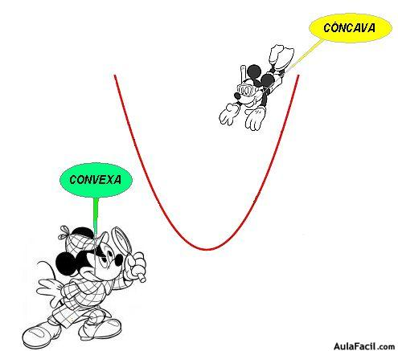

Tema 7
Derivada
Definición de derivada
La derivada de una función en un punto \[x_0\] es la pendiente de la recta tangente a dicha función en dicho punto. Se denota por \[f'(x_0)\].

Recordando...
Pendiente de una recta
\[ m = \frac{y_2-y_1}{x_2-x_1} = \frac{f(x_2) - f(x_1)}{x_2-x_1} \]
Buscando la pendiente...
Ver geogebra\[f'(x_0) = \lim_{x \to x_0} \frac{f(x) - f(x_0)}{x - x_0}\]
\[f'(x_0) = \lim_{h \to 0} \frac{f(x_0 + h) - f(x_0)}{h}\]
1Calcula usando la definición, las siguientes derivadas:
- Siendo \[f(x) = 3x - 4\], \[f'(2)\]
- Siendo \[g(x) = x^2 - 4\], \[g'(5)\]
Derivabilidad
Una función es derivable en un punto si existe el límite que usamos para definir la función derivada. Por lo tanto tendrán que existir sus límites laterales y estos ser iguales.
Derivabilidad
Para que una función sea derivable en un punto, esta ha de ser continua en dicho punto.
Graficamente, las funciones no son derivables en los "picos".
2Estudia la continuidad y derivabilidad de las siguientes funciones:
- \[ f(x) = \left\{ \begin{array}{lc} x^2+1 & x \le 1 \\ -x+3 & x \gt 1 \end{array} \right.\]
- \[ t(x) = |x-5| \]
- \[ f(x) = \left\{ \begin{array}{lc} \frac{x^2-9}{x-3} & x \neq 3 \\ 6 & x = 1 \end{array} \right.\]
Función derivada
Sea f una función, la función derivada f' es aquella que lleva a cada valor en la derivada de la función f.
Función derivada
Ver geogebraDerivadas sucesivas
Como f' también es una función, podemos calcular su derivada.
Existe por lo tanto una función derivada segunda, tercera, cuarta, etc.
Se denotan por \[f''(x)\], \[f'''(x)\], \[f^{4)}(x)\dots\]
3Calcula la función derivada primera y segunda de las siguientes funciones:
- \[f(x) = 3x\]
- \[g(x) = x^2 + 3\]
Cálculo de derivadas
Función constante
\[f(x) = N\]
\[f'(x) = 0 \]
Función potencia
\[f(x) = x^n\]
\[f'(x) = n \cdot x^{n-1} \]
Ejemplo: \[ f(x) = x^3 \Rightarrow \] \[f'(x) = 3x^2\]
Ejemplo: \[ f(x) = \sqrt{x} = x^{1/2} \Rightarrow \] \[f'(x) = \frac{1}{2} \cdot x^{-1/2} = \frac{1}{2\sqrt{x}}\]
Derivadas de operaciones: producto por escalar
\[ (k \cdot f)'(x) = k \cdot f'(x) \]
Ejemplo: \[f(x) = 3x^2 \Rightarrow \] \[f'(x) = 3 \cdot 2 \cdot x = 6x\]
Derivadas de operaciones: suma/resta
\[(f+g)'(x) = f'(x) + g'(x)\]
Ejemplo: \[ f(x) = x^2 + 3x \Rightarrow \] \[f'(x) = 2x + 3\]
4 Calcula las derivadas de los siguientes funciones polinómicas:
- \[ f(x) = 3\]
- \[ f(x) = x^3 \]
- \[ f(x) = x^3 + 2x \]
- \[ f(x) = x^2 + 3x + 4 \]
- \[ f(x) = 2x^4 + 5x^2 \]
Derivadas elementales
Ver tabla
5Calcula las derivadas de las siguientes funciones elementales:
- \[ f(x) = 2^x \]
- \[ f(x) = ln(x) \]
- \[ f(x) = sen(x) + cos(x)\]
- \[ f(x) = \sqrt{x}\]
Derivadas de operaciones: producto
\[ (f \cdot g)'(x) = f'(x)\cdot g(x) + f(x)\cdot g'(x) \]
Derivadas de operaciones: cociente
\[ (\frac{f}{g})'(x) = \frac{f'(x) \cdot g(x) - f(x) \cdot g'(x)}{[g'(x)]^2}\]
6Calcula las derivadas de los siguientes productos y cocientes de funciones:
- \[ f(x) = 2x \cdot 2^x \]
- \[ f(x) = sen(x) \cdot \sqrt{x} \]
- \[ f(x) = \frac{sen(x)}{2x} \]
- \[ f(x) = \frac{e^x}{3x^2}\]
Derivadas de operaciones: composición
Regla de la cadena
\[ (f \circ g)'(x) = f'(g(x)) \cdot g'(x) \]
7Calcula las siguientes derivadas:
- \[ f(x) = sen(x^3 -2x) \]
- \[ f(x) = ln(x^2+4) \]
- \[ f(x) = cos((x+3)^2) \]
- \[ f(x) = 2^{x^2+3x} \]
- \[ f(x) = ln(3x \cdot 3^x) \]
- \[ f(x) = \sqrt{sen(x^2 +3)} \]
- \[ f(x) = \frac{1}{cos^2(x^2 + 3)}\]
- \[ f(x) = (\frac{x^2+3}{x-4})^3\]
- \[ f(x) = \frac{sen((x+3)^3)}{2x^2}\]
- \[ f(x) = \sqrt[3]{\frac{x^2+3}{sen(x)}}\]
- \[ f(x) = ln(\sqrt{\frac{x^2+3}{cos(x)}})\]
- \[ f(x) = tan(x^2 + \sqrt{3x})\]
8Calcula la ecuación del la recta tangente y de la recta normal a las siguientes funciones en los puntos indicados.
- \[ f(x) = 3x^2 + 4x \] en \[x_0 = 3\]
- \[ t(x) = \sqrt{x^2 + 3} \] en \[x_0 = 1\]
9Determina en que punto la recta tangente a la función \[f(x) = x^2+3x\] es paralela a la recta \[r \equiv 2x+y -3 = 0\]. Indica la ecuación de dicha recta tangente.
10Determina en que punto la recta tangente a la función \[f(x) = \frac{x^3}{3} - x^2 -3x +1\] forma un ángulo de 135º con el sentido positivo del eje de abscisas. Indica la ecuación de dicha recta tangente.
Función derivada y Derivabilidad
Si una función \[f\] es continua en \[x = x_0\] y existe el límite \[\lim_{x\to x_0^-} f'(x) = L\] entonces \[f'(x_0^-) = L\]
Si una función \[f\] es continua en \[x = x_0\] y existe el límite \[\lim_{x\to x_0^+} f'(x) = L\] entonces \[f'(x_0^+) = L\]
En caso de no existir dicho límite tendríamos que recurrir a la definición de derivada.8Comprueba si existe algún valor de \[a\] para el cual sean derivables las siguientes funciones en los puntos indicados.
- \[ f(x) = \left\{ \begin{array}{lc} ax+2 & x \lt 1 \\ 3(x-2)^2 & x \ge 1 \end{array} \right.\] en el punto \[x=1\]
- \[ f(x) = \left\{ \begin{array}{lc} a-x^2 & x \le 1 \\ \frac{2}{ax} & x \ge 1 \end{array} \right.\] en el punto \[x=1\]
Derivada y (De)Crecimiento de una función
Ver en Geogebra9Indica si las siguientes funciones están creciendo o decreciendo en los puntos indicados:
- \[ f(x) = x^3 - 3 \] en \[ x = -5 \]
- \[ f(x) = 2 - \sqrt{x^2 + 3} \] en \[ x = 7 \]
- \[ f(x) = ln(x^2 + 2x +6) \] en \[ x = 8 \]
Puntos críticos de una función
Son aquellos donde la derivada primera vale 0.
10Indica los puntos críticos de las funciones anteriores:
- \[ f(x) = x^3 - 3 \] en \[ x = -5 \]
- \[ f(x) = 2 - \sqrt{x^2 + 3} \] en \[ x = 7 \]
- \[ f(x) = ln(x^2 + 2x +6) \] en \[ x = 8 \]
Determinación de punto crítico
Análisis de crecimiento y decreciendo.
11Indica si los puntos críticos del ejercicio anterior son máximos, mínimos o puntos de inflexión:
- \[ f(x) = x^3 - 3 \] en \[ x = -5 \]
- \[ f(x) = 2 - \sqrt{x^2 + 3} \] en \[ x = 7 \]
- \[ f(x) = ln(x^2 + 2x +6) \] en \[ x = 8 \]
Determinación de punto crítico
Criterio segunda derivada
- \[f''(x_0) \lt 0]: Mínimo
- \[f''(x_0) \gt 0]: Máximo
- \[f''(x_0) = 0]: Posible Punto de Inflexión
Análisis de una función: crecimiento/decreciendo y máximos/mínimos
12Analiza el crecimiento/decreciemiento y los máximos y mínimos de las siguientes funciones:
- \[ f(x) = x^2 -5x +12\]
- \[ f(x) = 2x^3 -3x^2\]
- \[ f(x) = x^4-4x^3-2x^2+12x\]
- \[ f(x) = \frac{x^2}{1+x^2}\]
- \[ f(x) = x^3 - 7x^2 + 36\]
Curvatura
- Concavo
- Convexo
Polígonos...
Pero las funciones...
Curvatura
- Convexo: la recta tangente queda por encima de la gráfica.
- Concavo: la recta tangente queda por debajo de la gráfica.
La función \[x^2\] es CONCAVA
Curvatura
- Convexo: \[f''(x) \lt 0\]
- Concavo: \[f''(x) \gt 0\]
Puntos de inflexión
Cambio de cóncavo a convexo o convexo a cóncavo.
\[f''(x) = 0\] y \[f'''(x) \neq 0\]
Análisis de concavidad y convexidad
13Analiza la curvatura de las siguientes funciones:
- \[ f(x) = 2x^3 -3x^2\]
- \[ f(x) = x^4-4x^3-2x^2+12x\]
- \[ f(x) = x^3 - 7x^2 + 36\]
Análisis de una función
- Dominio
- Puntos de corte
- Continuidad
- Asíntotas
- Crecimiento/Decrecimiento
- Máximos/Mínimos
- Curvatura y puntos de inflexión
- (Simetría)
- (Periodicidad)
14Analiza las siguientes funciones:
- \[ f(x) = \frac{x^2}{x-2} \]
- \[ f(x) = \frac{x^2+x+1}{x^2} \]
- \[ f(x) = \frac{x}{x^2+3} \]
Problemas de optimización
Debemos expresar el problema como una función y luego calcular el máximo o mínimo.
15Encuentra la base y la aultrua del triángulo isósceles de perímetro 50cm que tenga la mayor área posible.
16Una lata cilíndrica de cierto refresco tiene un volumen de 333cm³. La chapa utilizada para las bases es doble de cara que la utilizada para cada lateral. Calcula las dimensiones de la lata para que el coste de fabricxación sea el menor posible.
17La página de un libro tiene un área de 6000cm². Si los cuatro márgenes miden 2cm, calcula las dimensiones de la página para que la parte impresa ea la mayotr posible.
18Se condidera una ventana cuya parte inferior es un rectángulo y la superior un semicírculo. Si el perímetro de la ventana es 6m, calcula las dimensiones de la parte rectangular para que entre un máximo de luz.
Derivada como incremento instantáneo
Ejemplo: dinámica (MRUA)
\[s(t) = \frac{1}{2} a t^{2}+v_{0}t +e_{0} \]
\[v(t) = s'(t) = \] \[a \cdot t + v_0 \]
\[a(t) = v'(t) = \] \[a\]
19Un malabarista lanza verticalmente una pelota. Su ecuación del movimiento es \[s(t) = -6t^2 + 48t\]. Se pide:
- ¿Con qué velocidad inicial se lanza la pelota?
- ¿En qué instante empieza a descender?
- ¿Cuál es la altura máxima a la que llega?
- ¿Cuánto tiempo está en movimiento?
- ¿Qué velocidad lleva la pelota en los instantes t=3 y t=7? ¿Por qué son de distinto signo?